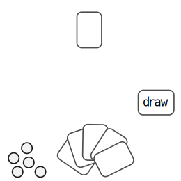
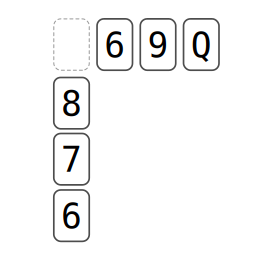
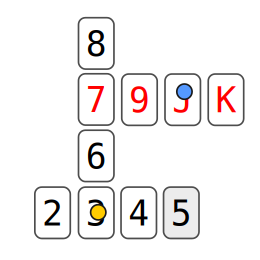
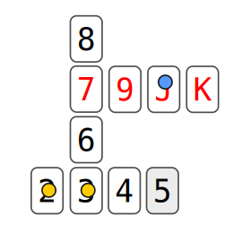
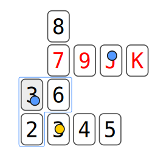

#^title trim=ends

 Agincards

#^body form=markdown

Agincards
=========

Agincards is a reference to *Agincourt*, a french town not unlike 
Carcassonne, and is intended to indicate that this game is related to 
Carcassonne but playable with a pack of cards.

**Required:**  
1. One standard pack of 52 cards 
2. Five similar coins to use as tokens
    - *For more than one player, each player needs five tokens and they 
should be distinguishable.*
3. A piece of paper to write running total scores on
4. A writing implement
5. A reasonable area to place cards on

The game can spread itself out so please give yourself a lot of space.

Agincards is designed to not need any strange parts and most people 
should be able to round up these modest materials.

The following are the **basic game rules for single play**.

Multiple players take turns and keep track of separate scores. The game 
play remains exactly the same as single play but you may want to use 
more than one pack of cards for games with many players.

SETUP
-----

Shuffle the pack of cards.



Deal five cards to your hand and also take your initial five tokens.

Place the rest of the pack face down, this is the draw pile.

Draw one card from this pile and place it in the middle of the table, 
this is the seed card of the map.

Set your initial score to 0, this is a running total.

**As you score in the game, this number will go up so keep track of it as 
you would in a game like scrabble.**

TURNS
-----

Play one card from your hand onto the map, or pass if you wish.

If you now have less than five cards in your hand, take one card from 
the draw pile into your hand and begin to plot your next move.

**Please note** that you must play a card *first* and then draw a card, 
not the other way around.

When there are no more cards in the draw pile, play what is left from 
your hand without drawing any new cards.

The game is over when no player wishes to play any more cards.

Usually this is because they have run out of cards but play may end at 
any time if a consensus to stop is reached.

MAP
---

The map is where cards and tokens are placed.

Whenever you play a card by placing it on the map, you also have the 
option of placing a single token on top of it.

This is the *only* time you may play a token.   
And you may only play one token at a time.

**Thus, only one token can occupy a card at any time and only during 
your turn and placement can you play it.**

This will instantly score you points and probably more whilst it 
remains on the map.

You only have a limited number of tokens so it may be some time before 
you can remove that token from the map.

PLACEMENT
---------

Each card represents a **number** and a **color**, red or black. The 
suits are ignored.

Aces are 1  
Jacks are 11  
Queens are 12  
Kings are 13  
All other numbers are their face values

You can only place a card next to another card already on the map, 
either to the left/right or top/bottom.

You may not place any card next to another card of the same value.  
All touching cards must be different.

When two cards are placed horizontally or vertically to each other, 
they begin to form a **run**.

Any two different cards can be placed next to each other but to have 
three or more, you must observe the direction of the run.

RUNS
----

A run is a numerical series of cards that goes higher in one direction 
and lower in the other.


For example, if 4 and 6 are placed next to each other, only cards 
less than 4 can continue the run past the 4 and only cards more than 6 
can continue the run past the 6.

You can never break this placement rule, all runs of cards must 
**ascend in one direction** and **descend in the opposite**.

DEAD SPACE
----------

When you place an Ace or a King, you end the run in one direction as no 
card can be higher than a King or lower than an Ace.

This causes a dead space to exist as no card can possibly be placed 
in either direction.

Another way to create a dead space is when two runs intersect and no 
card can be placed that would satisfy the conditions of both runs.



For example, less than 6 but more than 8.

These dead spaces are important as they can help you reclaim previously 
placed tokens.

SCORE RUNS
----------

Two conditions make a score run.

1. A run goes up/down or left/right from a placed token
2. Cards are of the same color as the card the token is placed on

SCORE POINTS
------------

You can score points by placing a token on an existing run **or** when 
you place a card to an existing run that has tokens on it.

**Placing a card to an existing run:**



For example, the player with the **yellow** token has scored 1 after 
they placed the 5 card next to the 4.



If that same player had another token on the card next to it, they 
would have scored 2 instead of 1.


**Placing a token on an existing run:**

The score is the length of the run; ie. 1 point for a single card, 2 
points for two cards and so on and is awarded to the owner of the 
token.



For example, the player with the **blue** token has placed a token on a 
new card they placed. This has earned them 3 points.

Multiple tokens from multiple players may score for the same score run.

**Therefore, a score run with no tokens in it is worthless and a score 
run with more than one of your tokens in it is highly desirable.**

RECLAIMING TOKENS
-----------------

When a run is exhausted, any tokens placed on it can no longer score 
any more. This is when you can reclaim those tokens.

You can reclaim as many or as little tokens as long as you are able to 
prove that the run has been exhausted.

For example, the score run in both directions cannot be continued 
either because a card of the opposite color has been placed ending the 
score run or a dead space is preventing any further cards from being 
placed.

It is up to the player who owns the token to spot and reclaim them when 
these conditions are met.

You may not argue that the cards needed to continue scoring are no 
longer available in what is left of the pack.

For example, saying that there are no Aces left so you cannot play a 
card less than 2.

Only a dead space or a change of color can end a score run.

END GAME
--------

When the game ends you will have a score and a pretty map of cards.

In single play, the objective is to score as high as you can (or 
trying to beat the pack, see below for alt game).

When playing with two or more people, the highest score wins you the 
bragging rights of a weaner.

BALANCE
-------

You can adjust the number of tokens each player has to balance the 
game.

For example, a strong player gets 4 tokens and a new player could 
be given 6.

THE FIRST GAME
--------------

<a href="{_dirname}/agin2.jpg"></a>

Played on 19th January 2007. As you can see, it requires space.

ALT SINGLE PLAYER GAME
----------------------

**Single player no score variant**

Because it is preferable to play patience games with a simple win/lose 
outcome, here is how to do the same with AginCards.

**Don't keep a score.**

Every card played must score at least 1 point.  
If you cannot play a card, you lose.  
If you play all the cards, you win.

As long as you have tokens, you can always play a card and place a 
token on it. Otherwise, you must continue scoring runs. 

This means you must place a token on the first card you play (not the 
initial seed card).

Most of the strategy comes from planning to reclaim tokens.

The **difficulty** can be adjusted by changing the number of tokens you 
have.  
If you keep losing with 5 tokens, try playing with 6 and so on.

I suspect it may not be possible to win with only one token, *no matter 
how lucky you are*.


